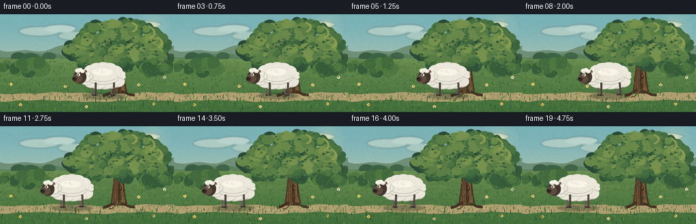
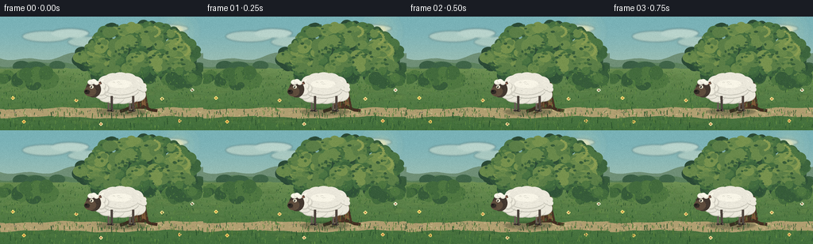

CODING AGENTS AS PIXEL WORLD MODELS
traex/DeepSeek-V4.1-Flash · instance_preservation_0056
点击播放 · 原生 RGB 像素
逐轮保存的候选
回放视频、检查图与代码变化。
每份候选均可单独播放。实际图片检查记录在下方工具轨迹中。
候选 01播放与检查图
点击播放 · 原生 RGB 像素


展开代码变化
--- 上一保存版本
+++ 本次保存版本
@@ -0,0 +1,509 @@
+"""Procedural storybook meadow: a sheep walks from in front of a tree to its left."""
+
+from __future__ import annotations
+
+import math
+from pathlib import Path
+
+import numpy as np
+from PIL import Image, ImageDraw, ImageFilter
+
+import artifact_io
+
+
+W, H, FPS, N = 256, 144, 4.0, 20
+S = 4
+SS = (W * S, H * S)
+ROOT = Path(__file__).resolve().parent
+RNG = np.random.default_rng(1937)
+
+
+def sc(value: float) -> int:
+ return int(round(value * S))
+
+
+def box(cx, cy, rx, ry):
+ return (sc(cx - rx), sc(cy - ry), sc(cx + rx), sc(cy + ry))
+
+
+def color(value):
+ if isinstance(value, np.ndarray):
+ return tuple(int(v) for v in value.tolist())
+ return value
+
+
+def ellipse(draw, cx, cy, rx, ry, fill, outline=None, width=0):
+ draw.ellipse(
+ box(cx, cy, rx, ry), fill=color(fill), outline=color(outline),
+ width=max(0, sc(width)),
+ )
+
+
+def polygon(draw, points, fill, outline=None, width=0):
+ pts = [(sc(x), sc(y)) for x, y in points]
+ draw.polygon(
+ pts, fill=color(fill), outline=color(outline),
+ width=max(0, sc(width)),
+ )
+
+
+def line(draw, points, fill, width=1.0):
+ pts = [(sc(x), sc(y)) for x, y in points]
+ draw.line(pts, fill=color(fill), width=max(1, sc(width)), joint="curve")
+
+
+def vertical_gradient(top, bottom, y0=0, y1=H):
+ y = np.arange(SS[1], dtype=np.float32)[:, None]
+ native_y = y / S
+ u = np.clip((native_y - y0) / max(1e-6, y1 - y0), 0, 1)
+ u = u * u * (3 - 2 * u)
+ a = np.array(top, dtype=np.float32)[None, None, :]
+ b = np.array(bottom, dtype=np.float32)[None, None, :]
+ row = a + (b - a) * u[:, :, None]
+ return np.repeat(row, SS[0], axis=1)
+
+
+def soft_layer():
+ return Image.new("RGBA", SS, (0, 0, 0, 0))
+
+
+def composite(base: Image.Image, layer: Image.Image, blur=0.0) -> Image.Image:
+ if blur:
+ layer = layer.filter(ImageFilter.GaussianBlur(sc(blur)))
+ return Image.alpha_composite(base.convert("RGBA"), layer)
+
+
+def draw_cloud_layer(base):
+ layer = soft_layer()
+ d = ImageDraw.Draw(layer)
+ for cx, cy, rx, ry, color in [
+ (58, 25, 30, 7, (246, 241, 218, 95)),
+ (88, 21, 24, 6, (255, 250, 230, 115)),
+ (119, 32, 34, 7, (245, 239, 214, 80)),
+ (211, 15, 26, 5, (255, 249, 224, 100)),
+ ]:
+ ellipse(d, cx, cy, rx, ry, color)
+ return composite(base, layer.filter(ImageFilter.GaussianBlur(sc(1.1))))
+
+
+def draw_sun(base):
+ layer = soft_layer()
+ d = ImageDraw.Draw(layer)
+ for r, alpha in [(28, 10), (20, 20), (13, 42), (7, 130)]:
+ ellipse(d, 224, 19, r, r, (255, 238, 172, alpha))
+ return composite(base, layer.filter(ImageFilter.GaussianBlur(sc(1.2))))
+
+
+def draw_hills(base):
+ d = ImageDraw.Draw(base)
+ far = [(0, 63)]
+ for x in range(0, W + 5, 5):
+ far.append((x, 51 + 4.0 * math.sin(x * 0.045) + 2.3 * math.sin(x * 0.11 + 0.8)))
+ far.extend([(W, 73), (0, 73)])
+ polygon(d, far, (111, 143, 118))
+
+ mid = [(0, 68)]
+ for x in range(0, W + 5, 5):
+ mid.append((x, 60 + 3.1 * math.sin(x * 0.055 + 1.7) + 1.7 * math.sin(x * 0.13)))
+ mid.extend([(W, 79), (0, 79)])
+ polygon(d, mid, (91, 128, 91))
+
+ near = [(0, 72)]
+ for x in range(0, W + 5, 4):
+ near.append((x, 66 + 2.2 * math.sin(x * 0.072 + 0.4) + 1.3 * math.sin(x * 0.18 + 2)))
+ near.extend([(W, 84), (0, 84)])
+ polygon(d, near, (112, 145, 86))
+ return base
+
+
+def draw_distant_trees(base):
+ d = ImageDraw.Draw(base)
+ trees = [
+ (27, 63, 11, 7, (58, 94, 68)),
+ (45, 65, 14, 8, (60, 98, 69)),
+ (72, 62, 10, 6, (64, 101, 72)),
+ (232, 63, 14, 8, (57, 91, 67)),
+ (250, 65, 10, 7, (60, 95, 68)),
+ ]
+ for x, y, rx, ry, color in trees:
+ line(d, [(x, y + ry), (x + 0.5, y + 2)], (68, 69, 51), 1.4)
+ ellipse(d, x, y, rx, ry, color)
+ ellipse(d, x - rx * 0.35, y + 1, rx * 0.55, ry * 0.7, color)
+ ellipse(d, x + rx * 0.35, y - 1, rx * 0.6, ry * 0.65, color)
+ return base
+
+
+def draw_meadow(base):
+ arr = np.asarray(base.convert("RGB")).astype(np.float32)
+ y = np.arange(SS[1], dtype=np.float32)[:, None]
+ u = np.clip((y / S - 66) / (H - 66), 0, 1)
+ top = np.array((111, 145, 84), np.float32)
+ bottom = np.array((66, 111, 60), np.float32)
+ shade = top + (bottom - top) * (u ** 0.78)[:, :, None]
+ mask = (y / S >= 66)[:, :, None]
+ arr = np.where(mask, shade, arr)
+ base = Image.fromarray(np.clip(arr, 0, 255).astype(np.uint8), "RGB")
+ d = ImageDraw.Draw(base)
+
+ # Small irregular color fields keep the low-resolution ground from reading flat.
+ for _ in range(170):
+ x = RNG.uniform(-3, W + 3)
+ y0 = RNG.uniform(67, H + 1)
+ rx = RNG.uniform(4, 17)
+ ry = RNG.uniform(1.2, 4.0)
+ c = RNG.choice(
+ [(91, 132, 68, 34), (126, 155, 81, 28), (75, 119, 62, 28), (143, 159, 88, 18)],
+ p=[0.34, 0.29, 0.25, 0.12],
+ )
+ layer = soft_layer()
+ ld = ImageDraw.Draw(layer)
+ ellipse(ld, x, y0, rx, ry, tuple(int(v) for v in c))
+ base = composite(base, layer.filter(ImageFilter.GaussianBlur(sc(0.8))))
+ d = ImageDraw.Draw(base)
+ return base
+
+
+def draw_path(base):
+ d = ImageDraw.Draw(base)
+ top_pts = []
+ bot_pts = []
+ for x in range(-5, W + 6, 3):
+ top = 116.2 + 1.1 * math.sin(x * 0.045 + 0.7) + 0.6 * math.sin(x * 0.14)
+ bot = 127.5 + 1.4 * math.sin(x * 0.041 + 2.2) + 0.5 * math.sin(x * 0.17)
+ top_pts.append((x, top))
+ bot_pts.append((x, bot))
+ polygon(d, top_pts + list(reversed(bot_pts)), (176, 159, 113))
+
+ # Soft sandy center and edge pebbles.
+ for _ in range(150):
+ x = RNG.uniform(0, W)
+ y = RNG.uniform(117.5, 126.5)
+ c = RNG.choice([(201, 184, 136), (158, 142, 103), (185, 169, 121)])
+ ellipse(d, x, y, RNG.uniform(0.5, 1.7), RNG.uniform(0.25, 0.65), c)
+ for x, y, r in [(19, 121, 1.4), (65, 124, 1.1), (113, 119, 1.2), (142, 125, 1.5), (220, 120, 1.1)]:
+ ellipse(d, x, y, r, r * 0.55, (119, 110, 91))
+ ellipse(d, x - 0.3, y - 0.4, r * 0.55, r * 0.25, (184, 170, 133))
+ return base
+
+
+def draw_grass(base, frame=0):
+ d = ImageDraw.Draw(base)
+ colors = [(54, 98, 51), (63, 111, 54), (78, 125, 60), (98, 142, 67), (47, 87, 51)]
+ for _ in range(920):
+ x = RNG.uniform(-2, W + 2)
+ y = RNG.uniform(68, H + 3)
+ depth = (y - 68) / (H - 68)
+ h = RNG.uniform(1.2, 3.4) * (0.55 + depth)
+ sway = RNG.uniform(-0.8, 0.8)
+ c = colors[int(RNG.integers(0, len(colors)))]
+ line(d, [(x, y), (x + sway, y - h)], c, RNG.uniform(0.45, 0.9))
+
+ # A handful of taller foreground blades move very slightly.
+ for i in range(34):
+ x = 4 + i * 7.6 + RNG.uniform(-2.2, 2.2)
+ y = RNG.uniform(124, 142)
+ h = RNG.uniform(4, 8)
+ phase = RNG.uniform(0, math.tau)
+ lean = 0.8 * math.sin(frame * 0.22 + phase)
+ c = RNG.choice([(43, 82, 46), (62, 104, 51), (85, 125, 58)])
+ line(d, [(x, y), (x + lean * 0.45, y - h * 0.55), (x + lean, y - h)], c, 1.05)
+ return base
+
+
+def draw_flowers(base):
+ d = ImageDraw.Draw(base)
+ flowers = [
+ (16, 103, (245, 226, 116)),
+ (30, 133, (238, 205, 98)),
+ (47, 89, (241, 232, 194)),
+ (96, 106, (244, 213, 123)),
+ (127, 136, (238, 220, 154)),
+ (204, 104, (243, 224, 139)),
+ (226, 132, (242, 201, 111)),
+ (242, 93, (231, 234, 207)),
+ ]
+ for x, y, color in flowers:
+ line(d, [(x, y + 4), (x + 0.4, y)], (50, 101, 50), 0.65)
+ for dx, dy in [(-1.2, 0), (1.2, 0), (0, -1.2), (0, 1.2)]:
+ ellipse(d, x + dx, y + dy, 1.25, 1.1, color)
+ ellipse(d, x, y, 0.75, 0.7, (173, 105, 51))
+ return base
+
+
+def draw_tree(base):
+ d = ImageDraw.Draw(base)
+
+ # Main limbs, visible through deliberately airy foliage.
+ limbs = [
+ ([(174, 105), (174, 72), (170, 50)], 10.0),
+ ([(173, 75), (153, 58), (139, 45)], 6.0),
+ ([(175, 68), (194, 53), (213, 42)], 6.2),
+ ([(168, 58), (145, 45), (125, 39)], 4.6),
+ ([(179, 55), (200, 39), (220, 32)], 4.8),
+ ([(173, 51), (172, 31)], 5.1),
+ ]
+ for pts, width in limbs:
+ line(d, pts, (65, 48, 35), width + 1.5)
+ line(d, pts, (103, 72, 48), width)
+ line(d, [(x + 0.8, y) for x, y in pts], (126, 91, 58), max(1.0, width * 0.28))
+
+ trunk = [(162.5, 116.5), (164.5, 101), (166.5, 84), (168, 66), (169, 50),
+ (179.2, 50), (180.5, 65), (182.3, 83), (184.2, 101), (187.5, 116.5)]
+ polygon(d, trunk, (73, 51, 36))
+ polygon(d, [(164.7, 115), (167.4, 88), (169.2, 53), (173.2, 53),
+ (173.0, 91), (173.4, 115)], (108, 76, 49))
+ polygon(d, [(177.4, 54), (179.5, 75), (181.6, 98), (184.2, 115), (178.8, 115),
+ (177.0, 91), (176.3, 70)], (126, 91, 57))
+
+ # Roots.
+ line(d, [(169, 112), (158, 118), (151, 120)], (67, 47, 34), 4.3)
+ line(d, [(179, 113), (190, 118), (198, 119)], (67, 47, 34), 4.0)
+ line(d, [(171, 115), (165, 121), (160, 122)], (99, 70, 46), 1.8)
+
+ # Bark grooves and small knots.
+ for x, y0, y1, bend in [
+ (168.2, 57, 111, -0.7), (171.0, 56, 113, 0.4), (174.2, 58, 111, -0.2),
+ (177.8, 56, 113, 0.5), (181.0, 62, 108, -0.4),
+ ]:
+ pts = []
+ for y in np.linspace(y0, y1, 9):
+ pts.append((x + bend * math.sin((y - y0) * 0.18), y))
+ line(d, pts, (57, 39, 30), 0.55)
+ ellipse(d, 177.3, 91.5, 2.0, 3.2, (56, 39, 29))
+ ellipse(d, 177.0, 90.7, 1.0, 1.5, (130, 92, 55))
+ return base
+
+
+def foliage_cluster(draw, cx, cy, rx, ry, seed, palette, density=16):
+ rng = np.random.default_rng(seed)
+ for _ in range(density):
+ angle = rng.uniform(0, math.tau)
+ radius = math.sqrt(rng.uniform(0.05, 1.0))
+ x = cx + math.cos(angle) * rx * radius
+ y = cy + math.sin(angle) * ry * radius
+ r = rng.uniform(4.5, 9.5)
+ color = palette[int(rng.integers(0, len(palette)))]
+ ellipse(draw, x, y, r, r * rng.uniform(0.68, 1.05), color)
+
+
+def draw_canopy(base):
+ d = ImageDraw.Draw(base)
+ deep = [(43, 74, 54), (48, 82, 56), (55, 91, 58)]
+ mid = [(61, 101, 61), (68, 110, 64), (75, 116, 66)]
+ light = [(91, 126, 71), (105, 137, 75), (119, 146, 78)]
+
+ clusters = [
+ (116, 52, 19, 13, 11),
+ (132, 41, 26, 18, 12),
+ (150, 29, 29, 18, 13),
+ (177, 23, 31, 19, 14),
+ (204, 30, 29, 18, 15),
+ (224, 46, 23, 17, 16),
+ (210, 58, 27, 16, 17),
+ (188, 61, 30, 17, 18),
+ (160, 57, 31, 17, 19),
+ (136, 62, 25, 15, 20),
+ (230, 64, 16, 12, 21),
+ ]
+ for cx, cy, rx, ry, seed in clusters:
+ foliage_cluster(d, cx + 1.2, cy + 2.0, rx, ry, seed + 40, deep, 17)
+ for cx, cy, rx, ry, seed in clusters:
+ foliage_cluster(d, cx, cy, rx * 0.95, ry * 0.92, seed, mid, 18)
+ for cx, cy, rx, ry, seed in clusters:
+ foliage_cluster(d, cx - 2.0, cy - 2.4, rx * 0.75, ry * 0.65, seed + 100, light, 9)
+
+ # Leaf-sized perimeter strokes make the canopy edge feel hand-painted.
+ rng = np.random.default_rng(807)
+ for cx, cy, rx, ry, _ in clusters:
+ for _ in range(20):
+ a = rng.uniform(0, math.tau)
+ x = cx + math.cos(a) * rx * rng.uniform(0.75, 1.02)
+ y = cy + math.sin(a) * ry * rng.uniform(0.70, 1.02)
+ c = rng.choice([(55, 91, 58), (72, 111, 63), (96, 131, 72)])
+ ellipse(d, x, y, rng.uniform(1.2, 2.7), rng.uniform(0.8, 1.7), c)
+
+ # Warm rim light from the sunward upper-right side.
+ for cx, cy, rx, ry in [(207, 27, 20, 11), (222, 42, 16, 10), (181, 19, 20, 9)]:
+ for i in range(8):
+ a = -0.8 + i * 0.22
+ ellipse(d, cx + math.cos(a) * rx, cy + math.sin(a) * ry,
+ 1.7, 1.25, (139, 158, 83))
+ return base
+
+
+def draw_shrubs(base):
+ d = ImageDraw.Draw(base)
+ for cx, cy, rx, ry, seed in [
+ (18, 77, 18, 10, 30), (47, 78, 20, 11, 31), (229, 78, 19, 10, 32),
+ ]:
+ foliage_cluster(d, cx, cy, rx, ry, seed, [(55, 92, 58), (67, 107, 61), (79, 119, 65)], 14)
+ return base
+
+
+def draw_wool_body(base, cx, cy, scale=1.0):
+ d = ImageDraw.Draw(base)
+ rx, ry = 28.0 * scale, 14.5 * scale
+ ellipse(d, cx + 0.7, cy + 2.2, rx, ry, (151, 148, 133))
+ ellipse(d, cx, cy, rx, ry, (205, 202, 187))
+
+ bumps = [
+ (-22, -2, 10, 8), (-17, -8, 11, 9), (-9, -11, 12, 9), (0, -12, 13, 9),
+ (9, -11, 12, 9), (18, -7, 11, 9), (23, -1, 9, 8), (21, 7, 11, 8),
+ (12, 9, 12, 8), (3, 10, 13, 8), (-7, 10, 12, 8), (-17, 8, 11, 8),
+ (-24, 5, 9, 7), (0, -5, 24, 12),
+ ]
+ for ox, oy, brx, bry in bumps:
+ x = cx + ox * scale
+ y = cy + oy * scale
+ ellipse(d, x, y + 1.0 * scale, brx * scale, bry * scale, (199, 197, 184))
+ ellipse(d, x, y, brx * scale, bry * scale, (235, 232, 219))
+ if oy < 5:
+ ellipse(d, x - 0.7 * scale, y - 1.3 * scale,
+ brx * 0.63 * scale, bry * 0.43 * scale, (248, 245, 231))
+
+ # Fine wool curls, confined to the central body.
+ rng = np.random.default_rng(447)
+ for _ in range(31):
+ x = cx + rng.uniform(-23, 23) * scale
+ y = cy + rng.uniform(-8, 8) * scale
+ rr = rng.uniform(1.1, 2.4) * scale
+ c = rng.choice([(207, 205, 192), (221, 218, 203), (245, 242, 227)])
+ d.arc(box(x, y, rr, rr * 0.7), 200, 335, fill=color(c), width=max(1, sc(0.42)))
+
+ # Underside shading anchors the woolly mass.
+ d.arc(box(cx, cy + 1, 24 * scale, 11 * scale), 15, 165,
+ fill=(178, 177, 164), width=max(1, sc(0.7)))
+
+
+def draw_sheep(base, cx, base_y, phase, walk, nod, tail_swing):
+ d = ImageDraw.Draw(base)
+ body_cy = base_y - 27.5
+ body_scale = 1.0
+
+ # Ground shadow moves and breathes with the body.
+ shadow = soft_layer()
+ sd = ImageDraw.Draw(shadow)
+ ellipse(sd, cx + 1.0, base_y + 1.5, 30.5, 4.4, (39, 55, 36, 92))
+ base = composite(base, shadow.filter(ImageFilter.GaussianBlur(sc(1.1))))
+ d = ImageDraw.Draw(base)
+
+ # Far-side legs first, in a lighter silhouette.
+ for ox, p in [(-15, phase + math.pi), (12, phase + math.pi * 0.86)]:
+ swing = 2.9 * walk * math.sin(p)
+ lift = max(0.0, math.sin(p)) * 2.2 * walk
+ hip = (cx + ox, body_cy + 9)
+ knee = (cx + ox + swing * 0.45, base_y - 10 - lift * 0.45)
+ foot = (cx + ox + swing, base_y - lift)
+ line(d, [hip, knee, foot], (103, 93, 84), 2.4)
+ ellipse(d, foot[0] + 0.4, foot[1], 2.1, 1.1, (59, 53, 49))
+
+ draw_wool_body(base, cx, body_cy, body_scale)
+ d = ImageDraw.Draw(base)
+
+ # Near-side legs.
+ for ox, p, tone in [(-11, phase, (77, 68, 62)), (16, phase + math.pi * 0.12, (82, 72, 65))]:
+ swing = 3.2 * walk * math.sin(p)
+ lift = max(0.0, math.sin(p)) * 2.5 * walk
+ hip = (cx + ox, body_cy + 9)
+ knee = (cx + ox + swing * 0.48, base_y - 9 - lift * 0.4)
+ foot = (cx + ox + swing, base_y - lift)
+ line(d, [hip, knee, foot], tone, 2.9)
+ ellipse(d, foot[0] + 0.5, foot[1], 2.5, 1.2, (46, 42, 39))
+ ellipse(d, foot[0] + 1.5, foot[1] - 0.2, 1.0, 0.55, (121, 109, 94))
+
+ # Tail: a compact woolly poof on the right.
+ tx = cx + 27.0
+ ty = body_cy - 2 + tail_swing
+ for ox, oy, r in [(-1, 0, 4.4), (2, -2.3, 3.8), (2.4, 2.2, 3.8)]:
+ ellipse(d, tx + ox, ty + oy + 0.8, r, r * 0.8, (184, 182, 169))
+ ellipse(d, tx + ox, ty + oy, r, r * 0.8, (236, 233, 220))
+
+ # Neck and head.
+ head_x = cx - 34.0
+ head_y = body_cy + 0.5 + nod
+ for ox, oy, r in [(-21, 0, 7.0), (-24, -3, 6.0), (-24, 4, 5.6)]:
+ ellipse(d, cx + ox, body_cy + oy, r, r * 0.9, (210, 207, 194))
+ ellipse(d, cx + ox - 0.5, body_cy + oy - 1, r * 0.86, r * 0.72, (241, 238, 224))
+
+ # Ear behind the head.
+ line(d, [(head_x + 4, head_y - 6), (head_x + 10, head_y - 8.5)], (75, 58, 47), 3.6)
+ line(d, [(head_x + 5, head_y - 6), (head_x + 9, head_y - 8)], (169, 115, 93), 1.5)
+
+ ellipse(d, head_x, head_y, 9.4, 10.3, (67, 56, 48))
+ ellipse(d, head_x - 4.0, head_y + 2.6, 7.5, 6.4, (95, 77, 61))
+ ellipse(d, head_x - 8.0, head_y + 3.2, 3.6, 2.8, (49, 43, 38))
+ ellipse(d, head_x - 9.0, head_y + 2.3, 1.2, 0.8, (22, 21, 20))
+ line(d, [(head_x - 7.4, head_y + 5.4), (head_x - 4.2, head_y + 6.0)], (43, 35, 31), 0.55)
+
+ # Eye, brow, and the small wool forelock.
+ ellipse(d, head_x - 2.2, head_y - 3.1, 2.35, 2.1, (239, 232, 209))
+ ellipse(d, head_x - 2.8, head_y - 3.0, 1.05, 1.35, (28, 27, 25))
+ ellipse(d, head_x - 3.1, head_y - 3.5, 0.34, 0.38, (255, 251, 225))
+ d.arc(box(head_x - 2.2, head_y - 5.2, 3.0, 1.8), 195, 345,
+ fill=(47, 40, 35), width=max(1, sc(0.55)))
+ for ox, oy, r in [(-3.0, -9.0, 4.2), (0.4, -10.0, 3.8), (3.8, -8.2, 3.3)]:
+ ellipse(d, head_x + ox, head_y + oy, r, r * 0.8, (230, 227, 213))
+ ellipse(d, head_x + ox - 0.3, head_y + oy - 0.7, r * 0.75, r * 0.55, (250, 247, 233))
+ return base
+
+
+def build_background():
+ arr = vertical_gradient((121, 178, 184), (223, 214, 171))
+ base = Image.fromarray(np.clip(arr, 0, 255).astype(np.uint8), "RGB")
+ base = draw_cloud_layer(base)
+ base = draw_sun(base)
+ base = draw_hills(base)
+ base = draw_distant_trees(base)
+ base = draw_meadow(base)
+ base = draw_path(base)
+ base = draw_flowers(base)
+ base = draw_tree(base)
+ base = draw_canopy(base)
+ base = draw_shrubs(base)
+ return base
+
+
+def animate_sheep(frame):
+ t = float(frame)
+ move_start, move_end = 2.7, 16.2
+ u = min(1.0, max(0.0, (t - move_start) / (move_end - move_start)))
+ ease = u * u * (3.0 - 2.0 * u)
+ cx = 151.5 - 70.0 * ease
+ walk = math.sin(math.pi * u) ** 0.65 if 0.0 < u < 1.0 else 0.0
+ phase = math.tau * max(0.0, t - 2.0) / 3.0
+ body_bob = -0.55 * walk * abs(math.sin(phase))
+ nod = 0.45 * walk * math.sin(phase + 0.65)
+ tail_swing = 0.9 * math.sin(phase * 0.68 + 0.5) * (0.35 + 0.65 * walk)
+ return cx, 119.0 + body_bob, phase, walk, nod, tail_swing
+
+
+def make_frame(background, frame):
+ img = background.copy().convert("RGBA")
+ img = draw_grass(img, frame)
+ cx, base_y, phase, walk, nod, tail_swing = animate_sheep(frame)
+ img = draw_sheep(img, cx, base_y, phase, walk, nod, tail_swing)
+ return img.convert("RGB")
+
+
+def apply_finish(frame: Image.Image, index: int) -> np.ndarray:
+ # Supersampling gives clean silhouettes; a restrained final grain avoids a plastic look.
+ native = frame.resize((W, H), Image.Resampling.LANCZOS)
+ arr = np.asarray(native).astype(np.int16)
+ noise = np.random.default_rng(7300 + index).normal(0.0, 2.0, (H, W, 1))
+ arr = np.clip(arr + noise, 0, 255).astype(np.uint8)
+ return arr
+
+
+def main():
+ background = build_background()
+ frames = []
+ for index in range(N):
+ frame = make_frame(background, index)
+ frames.append(apply_finish(frame, index))
+ frames = np.stack(frames, axis=0)
+ artifact_io.save(frames, ROOT)
+ print(f"wrote {len(frames)} frames to {ROOT}")
+
+
+if __name__ == "__main__":
+ main()
可观测工具轨迹
实际执行的命令与返回图片。
命令 1exit 0
/bin/bash -c "pwd && rg --files -g 'prompt.txt' -g 'GENERATION_RULES.md' -g 'task_spec.json' -g '"'!**/.git/**'"'"
命令 2exit 0
/bin/bash -c 'git status --short && ls -la'
命令 3exit 0
/bin/bash -c 'cat prompt.txt'
命令 4exit 0
/bin/bash -c 'cat GENERATION_RULES.md'
命令 5exit 0
/bin/bash -c 'cat task_spec.json'
命令 6exit 0
/bin/bash -c "sed -n '1,240p' artifact_io.py && sed -n '1,240p' player_template.html"
命令 7exit 0
/bin/bash -c "python - <<'PY'
from PIL import Image
import numpy as np
print('Pillow', Image.__version__, 'numpy', np.__version__)
PY"命令 8exit 0
/bin/bash -c 'command -v chafa || true; command -v viu || true; command -v img2txt || true; command -v ffmpeg || true'
命令 9exit 1
/bin/bash -c 'python generate.py'
命令 10exit 1
/bin/bash -c 'python generate.py'
命令 11exit 0
/bin/bash -c 'python generate.py'
命令 12exit 0
/bin/bash -c "python - <<'PY'
from PIL import Image
import numpy as np
im=Image.open('frames/00.png')
a=np.asarray(im)
print(im.size, a.shape, a.min(), a.max(), a.mean(axis=(0,1)).round(1))
# Basic luminance map, emphasizing dark structures and pale sheep.
y=(0.2126*a[:,:,0]+0.7152*a[:,:,1]+0.0722*a[:,:,2])
chars=' .:-=+*#%@'
for row in y[::4,::3]:
print(''.join(chars[min(9,int(v/256*10))] for v in row))
PY"命令 13exit 0
/bin/bash -c "python - <<'PY'
from PIL import Image
import numpy as np
for f in [0,4,8,12,16,19]:
a=np.asarray(Image.open(f'frames/{f:02d}.png')).astype(float)
lum=a.mean(2)
# light sheep pixels, warm grass exclusion
mask=(lum>170)&(a[:,:,1]>a[:,:,2])&(a[:,:,0]>150)
ys,xs=np.where(mask)
print(f, 'bright bbox', (xs.min(),ys.min(),xs.max(),ys.max()), 'centroid', (xs.mean().round(1),ys.mean().round(1)))
PY"命令 14exit 0
/bin/bash -c "python - <<'PY'
from PIL import Image
for f in [0,4,8,12,16,19]:
im=Image.open(f'frames/{f:02d}.png')
im.crop((50,90,210,144)).resize((640,216),Image.Resampling.NEAREST).save(f'.tmp/crop{f:02d}.png')
PY"命令 15exit 0
/bin/bash -c "python - <<'PY'
from PIL import Image
import numpy as np
# High-contrast downsample around the action area for visual structure checking.
for f in [0,6,12,19]:
a=np.asarray(Image.open(f'frames/{f:02d}.png').crop((80,92,210,143)).resize((65,26)))
lum=a.mean(2)
chars=' .:-=+*#%@'
print('\\nFRAME',f)
for row in lum:
print(''.join(chars[min(9,int(v/256*10))] for v in row))
PY"命令 16exit 0
/bin/bash -c "python - <<'PY'
from PIL import Image
import numpy as np
for f in range(20):
a=np.asarray(Image.open(f'frames/{f:02d}.png')).astype(int)
yy,xx=np.mgrid[:144,:256]
# Wool is neutral/light; meadow and flowers fail the low chroma test.
chroma=a.max(2)-a.min(2)
mask=(a.mean(2)>178)&(chroma<25)&(yy>78)&(yy<124)
ys,xs=np.where(mask)
print(f'{f:02d}: x={xs.min():3d}..{xs.max():3d} y={ys.min():3d}..{ys.max():3d} n={len(xs):4d}')
PY"命令 17exit 0
/bin/bash -c "python - <<'PY'
from PIL import Image
im=Image.open('inspection.png')
print(im.size)
# Show 8 sampled frame crops together, each enlarged, for a final continuity check.
frames=[]
for i in [0,3,6,9,12,15,17,19]:
a=Image.open(f'frames/{i:02d}.png').crop((85,82,215,143)).resize((260,122),Image.Resampling.NEAREST)
frames.append(a)
out=Image.new('RGB',(1040,244))
for j,a in enumerate(frames): out.paste(a,((j%4)*260,(j//4)*122))
out.save('.tmp/sheep_sequence.png')
PY"命令 18exit 0
/bin/bash -c "python - <<'PY'
from pathlib import Path
from PIL import Image
import numpy as np
import json, zipfile
root=Path('.')
frames=sorted((root/'frames').glob('*.png'))
assert len(frames)==20
arr=[]
for p in frames:
a=np.asarray(Image.open(p).convert('RGB'))
assert a.shape==(144,256,3), (p,a.shape)
arr.append(a)
a=np.stack(arr)
with np.load('pixels.npz') as z:
packed=z['pixels']
assert packed.shape==(144,256,20)
decoded=np.stack([(packed>>16)&255,(packed>>8)&255,packed&255],axis=-1)
assert np.array_equal(decoded,a.transpose(1,2,0,3)), 'pixels.npz mismatch'
# Motion continuity and scene-change checks.
diff=np.abs(a[1:].astype(int)-a[:-1].astype(int)).mean(axis=(1,2,3))
print('frames',len(frames),'size',a.shape,'npz ok',decoded.shape)
print('consecutive mean diffs',np.round(diff,2).tolist())
print('unique frame hashes',len({p.read_bytes() for p in frames}))
print('index.html bytes',Path('index.html').stat().st_size)
print('inspection',Image.open('inspection.png').size,'transition',Image.open('transition_check.png').size)
PY"命令 19exit 0
/bin/bash -c "python - <<'PY'
from pathlib import Path
import json,re
p=Path('index.html').read_text()
assert 'window.__pixelReady=true' in p
assert '__DATA__' not in p
m=re.search(r'const DATA=(\\{.*?\\}),W=',p)
assert m
data=json.loads(m.group(1))
print('player',data['width'],data['height'],data['frames'],data['fps'],'deltas',len(data['deltas']))
print('artifacts:', ', '.join(sorted(x.name for x in Path('.').iterdir() if x.is_file())))
PY"保存候选 1 份；完成命令 19 次；可验证图片返回 0 张。原始 API 响应与完整日志保留在本地。